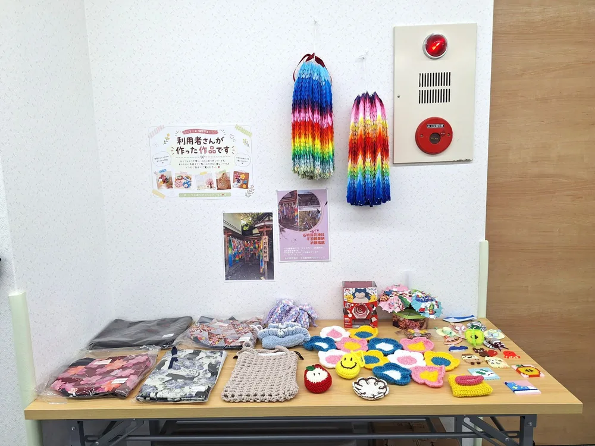

ABOUT US
事業紹介
「安心できる居場所づくり」を理念に、大阪市で就労継続支援B型事業所を運営しています。
事業所概要
「ユー」について
「ユー」は、大阪市東成区にある就労継続支援B型事業所です。“普通”を目指すのではなく、あなたらしく働くことを大切に、働くことに不安を感じる方が、自分のペースで少しずつ社会とのつながりを持てるようにサポートしています。ビーズやくるみボタンなどの手芸を中心とした軽作業を通じて、できることを一緒に見つけていきます。

事業所データ
施設概要
| 事業所名 | 就労継続支援B型事業所 ユー |
|---|---|
| 所在地 | 大阪市東成区東中本三丁目1番30号 |
| 電話番号 | 06-6224-3252 |
| FAX番号 | 06-6224-3253 |
| サービス種別 | 就労継続支援B型 |
| 定員 | 40名 |
| 休業日 | 土日・祝日、お盆、GW |
| サービス提供時間 | 9:30〜17:00 |
| 運営法人 | 合同会社ユー |
支援方針
一人ひとりに合わせた支援を
個別のペースを尊重
通う日数や作業内容は、ご本人の状態に合わせて柔軟に調整します。
安心できる雰囲気づくり
スタッフが日々の様子を見守り、話しやすい環境を大切にしています。
できることを増やす
得意なことを伸ばしながら、少しずつ新しい作業にも挑戦できます。
一日の流れ
ある日のスケジュール
大阪市東成区の就労継続支援B型事業所ユーでの、一日のスケジュール例です。
| 9:30 | 登所・朝の会 |
|---|---|
| 10:00 | 午前の作業 |
| 12:00 | 昼休憩 |
| 13:00 | 午後の作業 |
| 15:30 | 片付け・終わりの会 |
| 17:00 | 退所 |